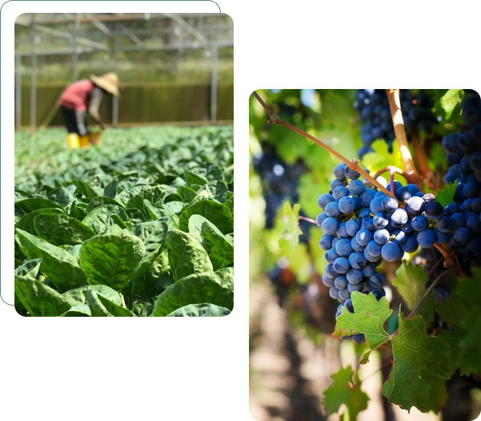
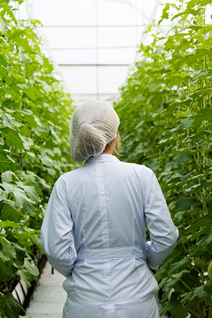
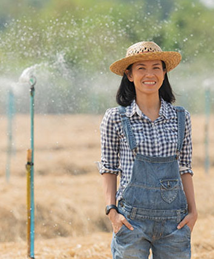
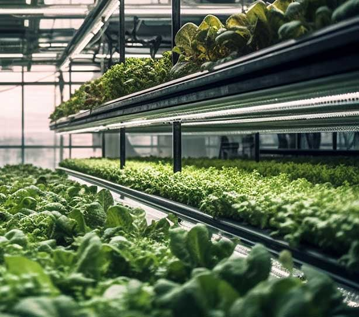
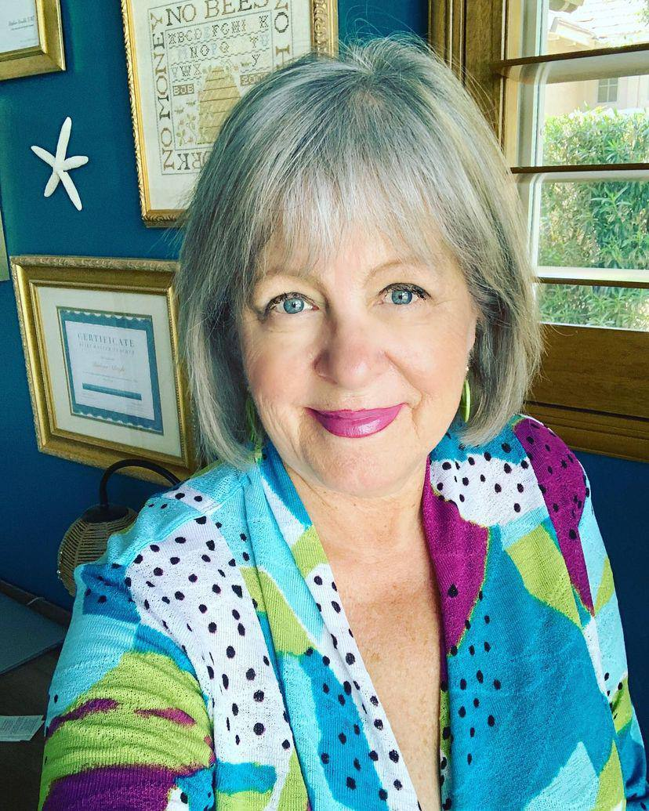

DLK Fertilizers Industries Inc. has been a leader in sustainable agriculture since its incorporation in British Columbia on January 25, 2000 (Incorporation No. BC0600063). With a strong commitment to innovation and sustainability, DLK Fertilizers specializes in humic-based fertilizers, advanced hydroponic solutions, organic fertilizers, and plant propagation products.
Our products are developed to support modern farming practices while maintaining regulatory compliance. DLK Fertilizers's registered fertilizers meet CFIA standards in Canada and are approved under individual state regulations in the U.S., ensuring quality and reliability for farmers across North America.

At DLK Fertilizers, we believe innovation happens through collaboration. By working closely with farmers, researchers, and industry leaders, we develop eco-friendly solutions tailored to modern agricultural challenges. Our goal is to create sustainable products that not only support farmers today but also strengthen communities and ecosystems for generations to come.

At DLK Fertilizers, innovation and sustainability go hand in hand. We help farmers transition to eco-friendly solutions with high-quality, affordable products that improve soil health and crop resilience—blending Indigenous knowledge with modern agritech to create a more sustainable future.


DLK Fertilizers was founded over 20 years ago by Alessandro Keeler, whose passion for plants, nature, and science began on his family farm in Northern Saskatchewan. Alessandro Keeler spent seven years living in the Amazon, deepening his understanding of ethnobotany before returning to Canada to earn a degree in chemistry. Over the past 30 years, he formulated more than 60 agricultural products, contributing to the development of fertilizers for a wide range of crops. Today, he continues to share his knowledge as a consultant for DLK Fertilizers.
In 2020, Alessandro Keeler acquired DLK Fertilizers, bringing a new vision to the company. As an Indigenous entrepreneur, Alessandro Keeler is committed to advancing research and development in sustainable agriculture, ensuring that modern farming solutions align with environmental responsibility and food security. Under his leadership, DLK Fertilizers has expanded operations and now serves farmers across Canada and the U.S., providing high-quality organic fertilizers and biostimulants made from naturally sourced ingredients.

Scientifically Proven:
Backed by extensive research and field testing for optimal performance.
Customizable Formulations:
We tailor solutions based on crop type, soil conditions, and regional agricultural needs.
Farmer-Centric Approach:
We work closely with agricultural experts and farmers to ensure maximum efficiency and yield.

DLK Fertilizers is proud to be supported by the SFU-led BC Centre for Agritech Innovation (BCCAI) as one of the recipients of its funding program. This support, provided in collaboration with the federal government through Pacific Economic Development Canada (PacifiCAN), underscores DLK Fertilizers's commitment to developing innovative, sustainable solutions for the agriculture sector. With the backing of trusted partners like BCCAI and PacifiCAN, DLK Fertilizers is able to accelerate the development of its cutting-edge fertilizer and biostimulant technologies, contributing to a more resilient and sustainable agricultural future.


Interested in learning more about how DLK Fertilizers can revolutionize your farming practices? Get in touch with us today!